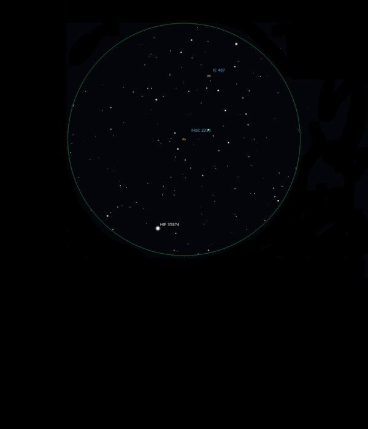

NGC 2336
Galaxy
in Camelopardalis
NGC 2336
Mag 10.7
02/02/16
Hunting faint Galaxies close to the pole while the telescope
axis is offset to observe Comet Catalina
Just the merest hint in a moment of good seeing in 12mm,
moving the FOV and with inverted viaion